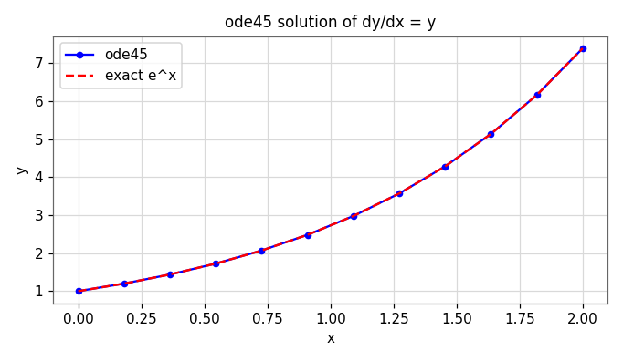

Numerical Integration & ODEs
Solve differential equations using numerical integration. We approximate definite integrals by summing simple shapes, then use the same idea to march the solution of an ordinary differential equation forward in time.
The definite integral as area
A definite integral is the area under the curve between two limits:
For complicated or non-elementary functions there is often no analytic antiderivative. Numerical integration (quadrature) approximates the area by breaking \([a,b]\) into subintervals and summing the areas of simple shapes — rectangles, trapezoids, or parabola-capped strips — that hug the curve.
All the rules below split the interval into \(n\) segments of width
5.1 The midpoint rule
Approximate each strip by a rectangle whose height is the function value at the midpoint of that strip:
- Compute \(\Delta x = (b-a)/n\).
- Find the midpoint of each subinterval.
- Evaluate \(f\) at every midpoint, sum, and multiply by \(\Delta x\).
Worked example
Approximate \(\int_0^{10} x^3\,dx\) with \(n=5\). Then \(\Delta x = 2\) and the midpoints are \(1,3,5,7,9\):
5.2 The trapezoidal rule
Connect adjacent points with straight lines and sum the resulting trapezoids. The interior points are counted twice (each is shared by two trapezoids), giving the weighting \(1,2,2,\dots,2,1\):
Worked example
Approximate \(\int_0^{8} x^2\,dx\) with \(n=4\), so \(\Delta x = 2\) and grid points \(0,2,4,6,8\):
Trapezoidal estimate = 176.0000
Source: Numerical Integration lecture.
5.3 Simpson's 1/3 rule
Instead of straight lines, fit a parabola through each pair of strips. This is far more accurate for smooth functions. With an even number of segments, the weighting pattern is \(1,4,2,4,\dots,4,1\):
Simpson estimate = 170.6667
🎛 Demo: watch the area approximation tighten
Pick a function and a rule, then increase the number of segments \(n\). Watch the shaded shapes hug the curve and the error shrink.
5.4 Gaussian & adaptive quadrature
Gaussian quadrature drops the requirement of equally spaced points. By choosing both the sample locations and their weights optimally, an \(n\)-point Gauss rule integrates polynomials up to degree \(2n-1\) exactly — remarkable accuracy from very few evaluations.
Adaptive quadrature puts the effort where the function is hard: it subdivides only the regions where the estimate is still changing, using many small strips on wiggly parts and few large strips on smooth parts. MATLAB's integral is adaptive.
integral = 0.88208139
We also handle improper integrals (infinite limits or integrable singularities) by transformation or by special adaptive handling near the trouble spot.
5.5 Ordinary differential equations
A differential equation relates an unknown function to its derivatives. A first-order initial-value problem has the form
The derivative tells us the slope of the solution at every point; the initial condition pins down which specific curve we are on. Integrating \(dy/dx\) alone gives a family of curves differing by a constant \(c\); the initial value selects one.
When \(f(x,y)\) has no closed-form solution, we march forward in small steps of size \(h\), using the slope to predict the next value — the same “sum small pieces” idea as integration.
5.6 Euler's method
The simplest one-step method. From the current point, follow the slope \(f(x_i,y_i)\) in a straight line for one step of width \(h\):
Each step uses a tangent-line approximation, so Euler accumulates error: it is first-order (halving \(h\) roughly halves the error). Smaller steps are more accurate but cost more evaluations.
x=0.00 y=1.000000 x=0.10 y=1.100000 x=0.20 y=1.210000 x=0.30 y=1.331000 x=0.40 y=1.464100 x=0.50 y=1.610510 x=0.60 y=1.771561 x=0.70 y=1.948717 x=0.80 y=2.143589 x=0.90 y=2.357948 x=1.00 y=2.593742 x=1.10 y=2.853117 x=1.20 y=3.138428 x=1.30 y=3.452271 x=1.40 y=3.797498 x=1.50 y=4.177248 x=1.60 y=4.594973 x=1.70 y=5.054470 x=1.80 y=5.559917 x=1.90 y=6.115909 x=2.00 y=6.727500 exact y(2.0) = 7.389056
Source: Numerical Integration of ODEs lecture.
🎛 Demo: Euler's method & step size
The faint line is the true solution; the teal polyline is Euler's step-by-step approximation; the orange line is RK4 (next section). Shrink the step \(h\) and watch Euler close in on the true curve — while RK4 is already almost exact.
5.7 Runge–Kutta & higher-order methods
Euler uses the slope only at the start of each step. Runge–Kutta methods sample the slope several times across the step and combine them, capturing curvature Euler misses. The classic RK4 averages four slope estimates:
RK4 is fourth-order: halving \(h\) cuts the error by about 16×. For the same accuracy it needs far larger steps than Euler.
- Adaptive step size: automatically shrink \(h\) where the solution changes fast and grow it where it is smooth (MATLAB's
ode45does this). - Coupled / higher-order ODEs: rewrite an \(n\)-th-order equation as a system of \(n\) first-order equations and march the whole vector forward together.

Source: Numerical Integration of ODEs lecture (Euler & built-in solvers).
Self-check · CLO-5
Six questions on integration and ODEs.